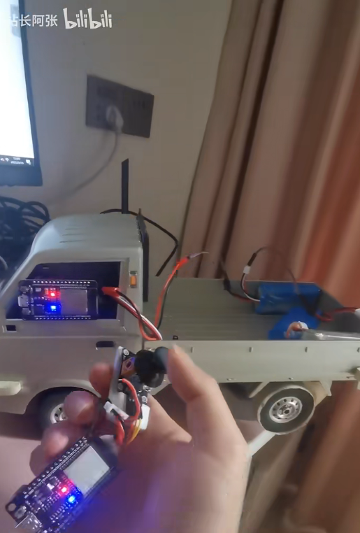

跟清逸折腾硬件之第三版本 esp32控+esp32接收端 (esp-now，Arduino IDE)

发布于
第三个版本，使用espnow模式(wifi broadcast)传输信号，使用esp32遥控端读取摇杆中的电位器信号，通过espnow 广播遥控信号。esp32接收端接收到信号包，转换成pwm控制信号，分别控制舵机和电调控制小车。
这个视频中有一部分讲代码中要调整的部分
https://www.bilibili.com/video/BV1pM411H7KS/?vd_source=5112aa86344ed83491a31bc47f2b5e76
接线方式
接线方式同 第二版本一致
../../www.shawn.com/article/a_64318283a086df73c41a3ff6.html
代码部分
发送端 （ESP32 摇杆端）
记得改一下这份代码中的接收端MAC地址，不然连接不上。先刷接收端，运行之后，在串口监视器中有打出。
// 参考自此文章 https://zhuanlan.zhihu.com/p/344109867
#include <WiFi.h>
#include <esp_now.h>
//Are we currently connected?
boolean connected = false;
// 设置遥控数据结构体
typedef struct rc_struct_message {
int ch1;
int ch2;
} rc_struct_message;
rc_struct_message rcData;
int LED_BUILTIN = 2;
bool ledShow = false;
int baseX = 0;
int baseY = 0;
// 100的间隙
int gap = 100;
// 接收设备的 MAC 地址，运行接收端的esp32后，从串口监视器中获得
uint8_t broadcastAddress[] = {0xE0, 0x5A, 0x1B, 0xA0, 0x04, 0xB4};
unsigned long timeNow = 0;
// 上一次发送数据的成功时间
unsigned long lastTickTime = millis();
// 数据发送回调函数
void OnDataSent(const uint8_t *mac_addr, esp_now_send_status_t status) {
if (status == ESP_NOW_SEND_SUCCESS) {
lastTickTime = millis();
}
// char macStr[18];
// Serial.print("Packet to: ");
// snprintf(macStr, sizeof(macStr), "%02x:%02x:%02x:%02x:%02x:%02x",
// mac_addr[0], mac_addr[1], mac_addr[2], mac_addr[3], mac_addr[4], mac_addr[5]);
// Serial.println(macStr);
// Serial.print("Send status: ");
// Serial.println(status == ESP_NOW_SEND_SUCCESS ? "Delivery Success" : "Delivery Fail");
// Serial.println();
}
void setup() {
Serial.begin(9600);
baseX = analogRead(35); // X 读取35针脚
baseY = analogRead(34); // Y 读取34针脚
WiFi.mode(WIFI_MODE_STA);
Serial.print("ESP32 RC TX MAC Address: ");
Serial.println(WiFi.macAddress());
if (esp_now_init() != ESP_OK) {
Serial.println("Error initializing ESP-NOW");
return;
}
// 设置发送数据回调函数
esp_now_register_send_cb(OnDataSent);
// 绑定数据接收端
esp_now_peer_info_t peerInfo;
memcpy(peerInfo.peer_addr, broadcastAddress, 6);
peerInfo.channel = 0;
peerInfo.encrypt = false;
// 检查设备是否配对成功
if (esp_now_add_peer(&peerInfo) != ESP_OK) {
Serial.println("Failed to add peer");
return;
}
pinMode(LED_BUILTIN, OUTPUT); // Initialize the LED_BUILTIN pin as an output
}
int MAX = 4096;
int vx = 0;
int vy = 0;
int sendMax = 1024;
int sendHaf = sendMax / 2;
// 输出到频道值 0 - 1024；
int ch1Value = 0;
int ch2Value = 0;
int ledLoopTick = -1;
void loop() {
timeNow = millis();
vx = analogRead(35);
vy = analogRead(34);
ch1Value = sendHaf;
ch2Value = sendHaf;
if (vx > baseX) {
if (vx > baseX + gap) {
ch1Value = int(float(vx - baseX - gap) / (MAX - baseX - gap) * sendHaf) + sendHaf;
}
} else {
if (vx < baseX - gap) {
ch1Value = int(float(vx) / float(baseX - gap) * sendHaf);
}
}
if (vy > baseY) {
if (vy > baseY + gap) {
ch2Value = int(float(vy - baseY - gap) / (MAX - baseY - gap) * sendHaf) + sendHaf;
}
} else {
if (vy < baseY - gap) {
ch2Value = int(float(vy) / float(baseY - gap) * sendHaf);
}
}
rcData.ch1 = ch1Value;
rcData.ch2 = ch2Value;
// 发送数据
esp_now_send(broadcastAddress, (uint8_t *) &rcData, sizeof(rcData));
if (timeNow - lastTickTime > 1000) {
// 没发送成功，进行闪烁
ledLoopTick += 1;
if (ledLoopTick >= 50) { // 闪太快看不清，隔50帧闪一次
ledLoopTick = 0;
}
if (ledLoopTick == 0) {
if (ledShow) {
digitalWrite(LED_BUILTIN, LOW);
ledShow = false;
} else {
digitalWrite(LED_BUILTIN, HIGH);
ledShow = true;
}
}
delay(10);
} else {
ledShow = true;
digitalWrite(LED_BUILTIN, HIGH);
}
delay(1); // 去掉
}
接收端（ESP32 车上端）
#include "WiFi.h"
#include <esp_now.h>
#include <stdio.h>
// 设置遥控数据结构体
typedef struct rc_struct_message {
int ch1;
int ch2;
} rc_struct_message;
rc_struct_message rcData;
/**
* 封装舵机的控制类
*/
class LedcServo {
public:
float freq = 50;
int resolution = 8;
float pwmBaseScale;
float pwmMin;
float pwmMax;
int channel;
int scale = 1;
void setup(float freq, int resolution, int channel);
/* 0 < scale <= 1 */
void setScale(float scale);
void attachPin(int pin);
void write(float value, float min, float max);
};
void LedcServo:: setup(float f, int r, int c) {
this->freq = f;
this->resolution = r;
this->pwmBaseScale = this->freq * pow(2, this->resolution) / 1000;
this->pwmMin = 1 * this->pwmBaseScale;
this->pwmMax = 2 * this->pwmBaseScale;
this->channel = c;
ledcSetup(this->channel, this->freq, this->resolution);
}
void LedcServo:: setScale(float s) {
if (s <= 0) throw "s 不能小于等于0";
if (s > 1) throw "s 不能大于1";
this->scale = s;
this->pwmMin = (1.5 - s) * this->pwmBaseScale;
this->pwmMax = (1.5 + s) * this->pwmBaseScale;
}
void LedcServo:: attachPin(int p) {
ledcAttachPin(p, this->channel);
}
void LedcServo:: write(float v, float min, float max) {
ledcWrite(this->channel, map(v, min, max, this->pwmMin, this->pwmMax));
// Serial.println(this->channel);
// Serial.println(v);
}
int sendMin = 0;
int sendMax = 1024;
int sendHaf = sendMax / 2;
int rxC1 = sendHaf;
int rxC2 = sendHaf;
int lastRxC1 = sendHaf;
int lastRxC2 = sendHaf;
LedcServo rxC1Servo;
LedcServo rxC1ServoHaf;
LedcServo rxC2Servo;
LedcServo rxC2ServoHaf;
unsigned long timeNow = 0;
unsigned long lastDataTickTime = 0;
int LED_BUILTIN = 2;
bool ledShow = false;
int ledLoopTick = -1;
// 数据接收回调函数
void OnDataRecv(const uint8_t * mac, const uint8_t *incomingData, int len) {
memcpy(&rcData, incomingData, sizeof(rcData));
rxC1 = rcData.ch1;
rxC2 = rcData.ch2;
lastDataTickTime = millis();
}
void setup() {
pinMode(LED_BUILTIN, OUTPUT); // Initialize the LED_BUILTIN pin as an output
digitalWrite(LED_BUILTIN, LOW);
rxC1Servo.setup(100, 10, 8);
rxC1Servo.attachPin(23); // 动力电机控制信号全强度，动力会很猛
rxC1Servo.setScale(1); // 全强度
rxC1Servo.write(0, -1, 1);
rxC1ServoHaf.setup(100, 10, 9);
rxC1ServoHaf.attachPin(22); // 动力电机控制信号一半强度，动力会可控一些
rxC1ServoHaf.setScale(0.3); // 半强度
rxC1ServoHaf.write(0, -1, 1);
rxC2Servo.setup(500, 10, 10);
rxC2Servo.attachPin(26); // 方向舵机信号全强度， 容易侧翻
rxC2Servo.setScale(0.7); // 半角度，顽皮龙D12的转向角最大到这个角度，继续调大，会让舵机在左右两边憋力，最后可能造成舵机齿轮扫坏。
// 其它类型的车辆
rxC2Servo.write(0, -1, 1);
rxC2ServoHaf.setup(500, 10, 11);
rxC2ServoHaf.attachPin(25); // 方向舵机信号一半强度，防止转弯过度
rxC2ServoHaf.setScale(0.3); // 小角度
rxC2ServoHaf.write(0, -1, 1);
Serial.begin(9600);
Serial.println();
Serial.print("Configuring access point...");
// 初始化 ESP-NOW
WiFi.mode(WIFI_STA);
Serial.print("ESP32 RC RX MAC Address: ");
Serial.println(WiFi.macAddress());
if (esp_now_init() != 0) {
Serial.println("Error initializing ESP-NOW");
return;
}
// 设置接收数据回调函数
esp_now_register_recv_cb(OnDataRecv);
}
void updateServo() {
if (lastRxC1 != rxC1) {
rxC1Servo.write(rxC1, sendMin, sendMax);
rxC1ServoHaf.write(rxC1, sendMin, sendMax);
lastRxC1 = rxC1;
}
if (lastRxC2 != rxC2) {
rxC2Servo.write(rxC2, sendMax, sendMin); // 反向
rxC2ServoHaf.write(rxC2, sendMax, sendMin); // 反向
lastRxC2 = rxC2;
}
}
void loop() {
timeNow = millis();
if (timeNow > lastDataTickTime && timeNow - lastDataTickTime > 1000) {
// 超过1秒未收到数据，自动归中，开始闪灯
rxC1 = sendHaf;
rxC2 = sendHaf;
ledLoopTick += 1;
if (ledLoopTick >= 50) { // 闪太快看不清，隔50帧闪一次
ledLoopTick = 0;
}
if (ledLoopTick == 0) {
if (ledShow) {
digitalWrite(LED_BUILTIN, LOW);
ledShow = false;
} else {
digitalWrite(LED_BUILTIN, HIGH);
ledShow = true;
}
}
delay(10);
} else {
// 有数据，就常亮
digitalWrite(LED_BUILTIN, HIGH);
ledShow = true;
}
updateServo();
}
评论
或 匿名发表评论